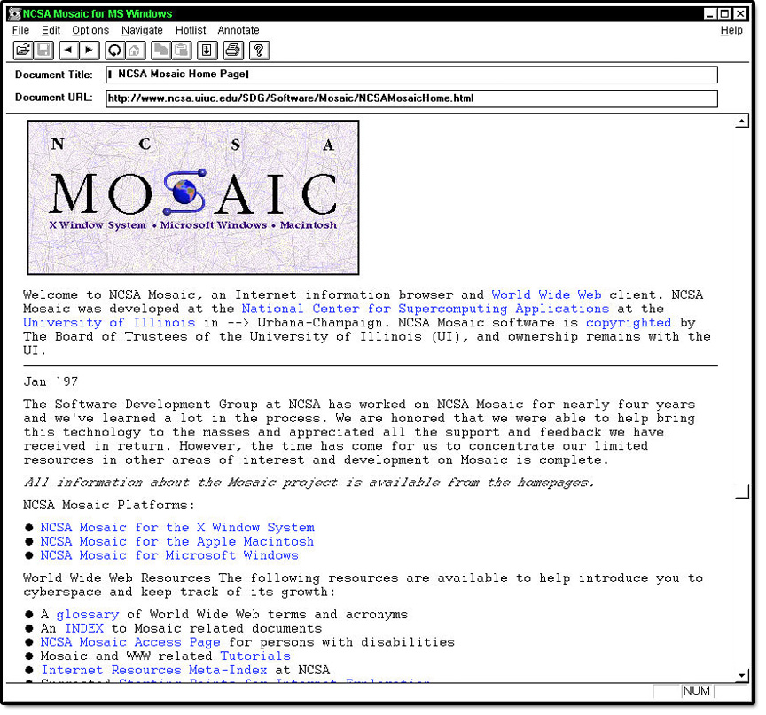

HTML and CSS Basics
The big three: HTML5, CSS and JavaScript
HTML and CSS Basics
The big three: HTML5, CSS and JavaScript
The Browser
The Internet existed long before the Web came to fruition, and lots of organizations were connected to it, including schools, companies and government organizations. As things progressed through the 80's, the Internet was used for file transfers, newsgroups (a kind of open forum), email and other conveniences.
At the time there were a number of different programs like 'fetch', 'gopher' and 'archie' that were used to download, browse and search for files. Typically, you might use one tool to search for the location of files of interest, then another to copy that file to a local machine. Then, you still needed more tools to read that file. If it was text, you could use a text editor, if it was a formatted document you might need a word processor, if a picture you would need an image viewer and so on.
Marc Andreesen conceived of a solution that would put all the pieces together in one app, making it easy for users to browse all the different sorts of information and data on the World Wide Web. Together with others, he started the "Mosaic" project.
Though not technically the first browser, Mosaic was the first one that many people experienced and played a big part in popularizing the concept of the World Wide Web and the Web browser. It provided a simple graphical way to access and browse the various resources on the Internet. Instead of using different tools to download and view information on the Internet, a simple click on a link would present the information in a graphical window. In many ways, it is the ancestor of most modern browsers.